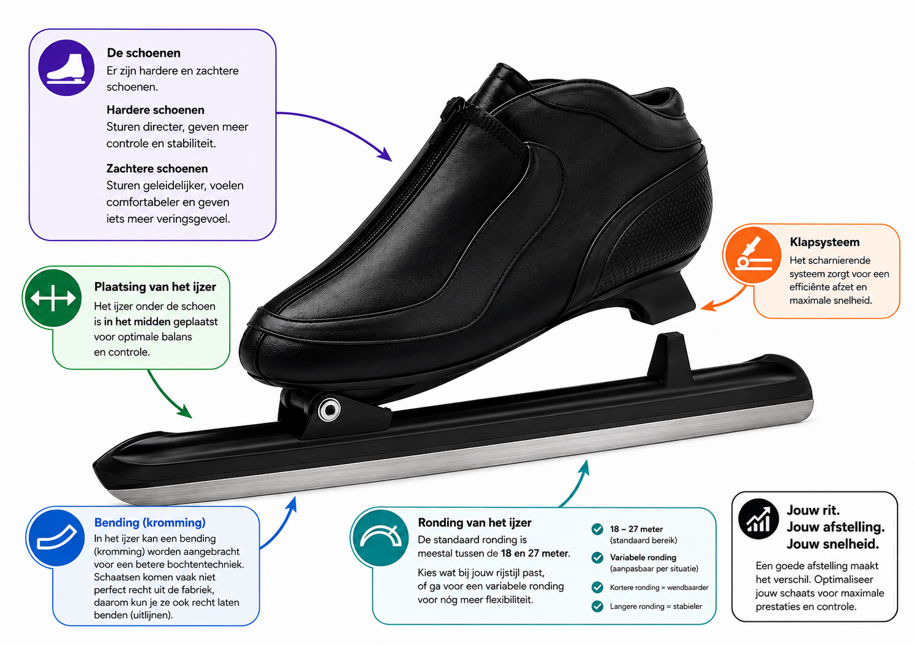
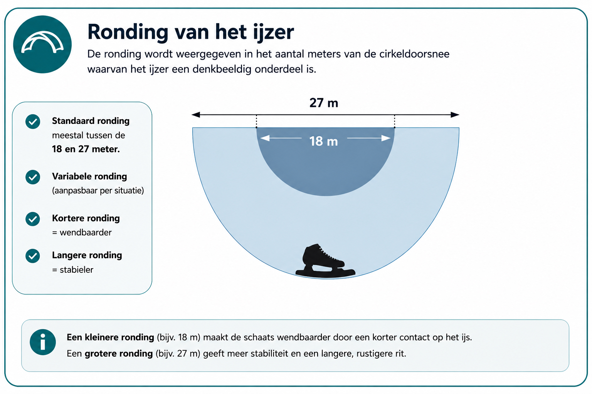
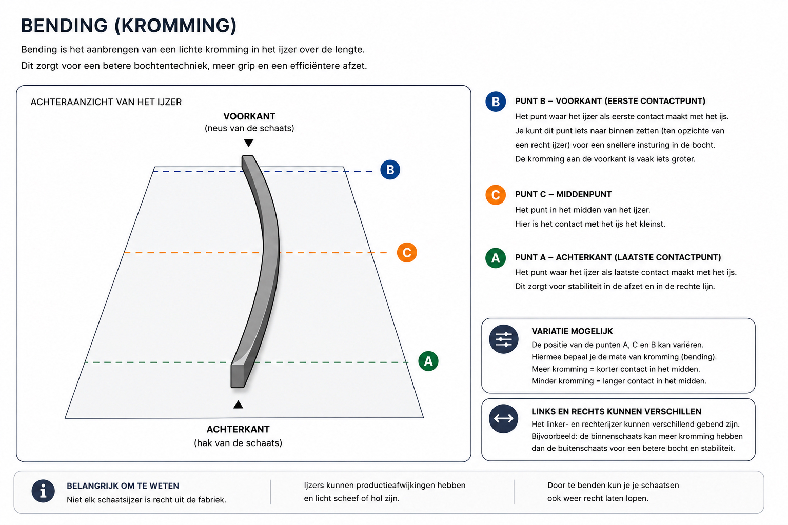

Een goede schaatsafstelling kan veel verschil maken in balans, comfort en vertrouwen op het ijs. Dat geldt op een langebaan, maar zeker ook tijdens langere dagen op natuurijs.
Als je uren achter elkaar schaatst, merk je kleine afwijkingen in materiaal vaak sterker dan tijdens een korte training. Een schaats die goed bij je past en prettig onder je voet staat, voelt meestal rustig en voorspelbaar aan.
Waarom is de afstelling van je schaatsen belangrijk?
Tijdens het schaatsen wil je zo stabiel mogelijk boven je ijzer staan. Als een ijzer niet prettig onder de schoen staat, kun je bijvoorbeeld het gevoel krijgen dat je voortdurend naar binnen of naar buiten valt.
Soms proberen schaatsers dit technisch te corrigeren terwijl het probleem gedeeltelijk in de afstelling kan zitten. Daarom kijken we bij materiaalproblemen niet alleen naar techniek, maar bijvoorbeeld ook naar:
- positie van het ijzer
- ronding
- eventuele bending
- pasvorm van de schoen
- slijpkwaliteit

1. Controleer hoe stabiel je op één schaats staat
Een eenvoudige praktijktest is om tijdens het schaatsen langere tijd op één been te glijden. Probeer bijvoorbeeld enkele seconden rustig op één schaats door te glijden.
Voelt dat stabiel en ontspannen? Of heb je het gevoel dat je direct naar één kant wordt gestuurd? Zo'n test vertelt niet automatisch wat er precies moet worden aangepast, maar kan wel laten zien dat het verstandig is iets nader te bekijken.
2. De zijwaartse positie van het ijzer
Bij veel schaatsen kan het ijzer iets naar binnen of buiten worden verplaatst. Dat zijn vaak maar kleine verschillen, maar die kunnen merkbaar zijn in balans en comfort.
Wanneer iemand voortdurend het gevoel heeft niet recht boven het ijzer te staan, kan de positie een van de dingen zijn om te beoordelen.
Maak daarbij liever kleine wijzigingen. Verander niet meerdere dingen tegelijk, want dan weet je achteraf niet welke aanpassing verschil heeft gemaakt.
3. Ronding van het schaatsijzer
Een schaatsijzer is over de lengte niet volledig vlak. Die geometrie beïnvloedt het gedrag van de schaats. Welke ronding prettig is, hangt af van verschillende factoren, zoals:
- schaatstechniek
- lichaamsbouw
- materiaal
- schaatsdiscipline
- persoonlijke voorkeur
Daarom bestaat er niet één instelling die voor iedere schaatser perfect is.

4. Bending
Bij bepaalde schaatsmaterialen kan ook bending een rol spelen. Dit is een specialistische aanpassing van het ijzer waarmee het gedrag van de schaats beïnvloed kan worden. Het is geen instelling die we aanraden om zonder ervaring zomaar zelf te veranderen.
Kleine wijzigingen kunnen merkbaar zijn. Laat grotere aanpassingen daarom bij voorkeur beoordelen door iemand die ervaring heeft met schaatsafstelling.
Bending is specialistisch werk. Laat grotere aanpassingen beoordelen door iemand met ervaring in schaatsafstelling.

5. Test een aanpassing altijd op het ijs
Uiteindelijk moet je voelen wat er tijdens het schaatsen gebeurt. Na een aanpassing kun je bijvoorbeeld letten op:
- kun je ontspannen glijden?
- voelt links ongeveer hetzelfde als rechts?
- kun je gemakkelijk druk opbouwen?
- heb je voldoende controle?
- ontstaan er drukpunten?
Pas daarna heeft het zin om eventueel verder te verfijnen.
Ik val steeds naar binnen
Wanneer je voortdurend het gevoel hebt naar binnen te vallen, kunnen daar verschillende oorzaken voor zijn. Denk aan:
- techniek
- enkelstabiliteit
- pasvorm van de schoen
- positie van het ijzer
Het is daarom verstandig om niet automatisch één onderdeel aan te passen zonder eerst te kijken wat er daadwerkelijk gebeurt.
Pijn of drukpunten
Pijn aan je voeten hoeft niet automatisch door de ijzerpositie te komen. Ook de pasvorm van de schoen, veterdruk of zool kan een rol spelen.
Bij langere schaatsdagen wordt een klein drukpunt vaak steeds vervelender. Daarom is het verstandig om materiaal ruim vóór een schaatsreis goed te testen.
Hoe belangrijk is slijpen?
Zelfs een goed afgestelde schaats rijdt niet prettig als de ijzers niet goed onderhouden zijn. Controleer daarom voor vertrek onder andere:
- of de ijzers scherp zijn
- of er beschadigingen in zitten
- of het slijpwerk gelijkmatig is
Tot slot
Een goede schaatsafstelling is vaak geen spectaculaire verandering. Het gaat meestal om kleine aanpassingen die samen zorgen dat je ontspannen boven je schaats staat.
Hoe minder je tegen je materiaal hoeft te vechten, hoe meer aandacht je overhoudt voor techniek, ijs en omgeving.